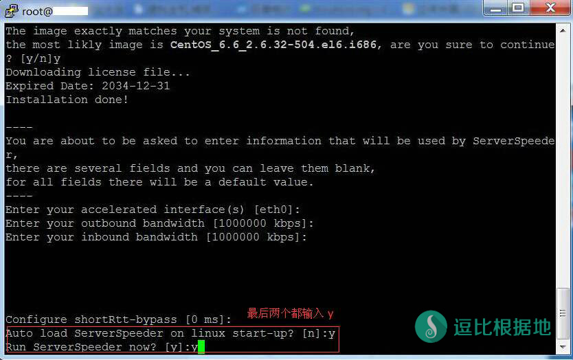

锐速是一款非常不错的TCP底层加速软件，可以非常方便快速地完成服务器网络的优化，配合 ShadowSocks 效果奇佳。目前锐速官方已经关闭注册了，所以我在这里分享几个开心版（破解）的一键锐速脚本。
锐速并非支持所有的内核版本，所以的安装之前一定要确定系统及内核支持安装锐速。
强烈推荐大家使用 Debian7 x64系统 | 3.2.0-4-amd64内核 ，这个系统和内核无论是锐速、Lotserver还是BBR，除了配置太低的我都没安装失败过！
不会链接VPS的，你需要看着个：Linux SSH链接工具 Putty 新手详细使用教程
内核检测
服务器使用uname -r命令来查询内核版本，例如返回的是3.2.0-4-amd64，3.2.0-4-amd64就是你的内核版本。
这里顺便说一下linode VPS仅支持debian7系统，在选择内核时请选择3.14.5-x86_64-linode42版本，这个版本才能安装锐速。
然后检查你的VPS是什么虚拟化技术，锐速不支持OpenVZ的（而大部分很便宜的VPS都是OpenVZ）
我们只需要安装vitr-what就能知道VPS的虚拟化技术是什么了。
Cent OS 系统：
yum install virt-what -y
Debian/Ubuntu 系统：
apt-get install virt-what -y
安装后执行下面这个命令，
virt-what
运行后会显示你的VPS虚拟化技术，如果不是OpenVZ，那么可以继续下面的安装步骤了。
安装开心版锐速
确定自己的内核版本在支持列表里，并且虚拟化技术非OpenVZ，就可以使用以下命令一键安装了。
为了备份和存档，这里我收集了几个锐速开心版的一键安装脚本，大家优先使用第一个脚本！
wget -N --no-check-certificate https://raw.githubusercontent.com/91yun/serverspeeder/master/serverspeeder.sh && bash serverspeeder.sh # 上面这个是新的锐速脚本，如果安装存着问题，可以尝试使用下面这个 旧的锐速脚本。 wget -N --no-check-certificate https://raw.githubusercontent.com/91yun/serverspeeder/master/serverspeeder-all.sh && bash serverspeeder-all.sh
脚本会自动检测你的VPS是否可以安装开心版锐速，如果可以就会提示你参数或者直接安装完成，参数设置直接回车默认即可。
最后两项输入y开机自动启动锐速，y立刻启动锐速。（这个参数设置一般情况下都是不会出现的。）
注意事项
如果安装过程中，提示内存不足终止安装(out of memory)，那么请看这个教程：Linux 添加 SWAP 交换内存/虚拟内存 的简单方法

卸载开心版锐速
chattr -i /serverspeeder/etc/apx* && /serverspeeder/bin/serverSpeeder.sh uninstall -f
安装完了，想要自己修改配置最大化加速效果，那么请看：锐速(ServerSpeeder/LotServer)配置参数简单说明，合理修改配置 提高加速效果
使用命令
#重启锐速 /serverspeeder/bin/serverSpeeder.sh restart #启动锐速 /serverspeeder/bin/serverSpeeder.sh start #停止锐速 /serverspeeder/bin/serverSpeeder.sh stop #查看锐速运行情况 /serverspeeder/bin/serverSpeeder.sh status
其他的优化方案：https://doub.io/ss-jc26/#三、优化Shadowsocks
开心版锐速脚本来自：https://www.91yun.co/archives/683
转载请超链接注明：逗比根据地 » 优秀的VPS TCP加速软件 —— 一键锐速安装脚本（开心版）
责任声明：本站一切资源仅用作交流学习，请勿用作商业或违法行为！如造成任何后果，本站概不负责！